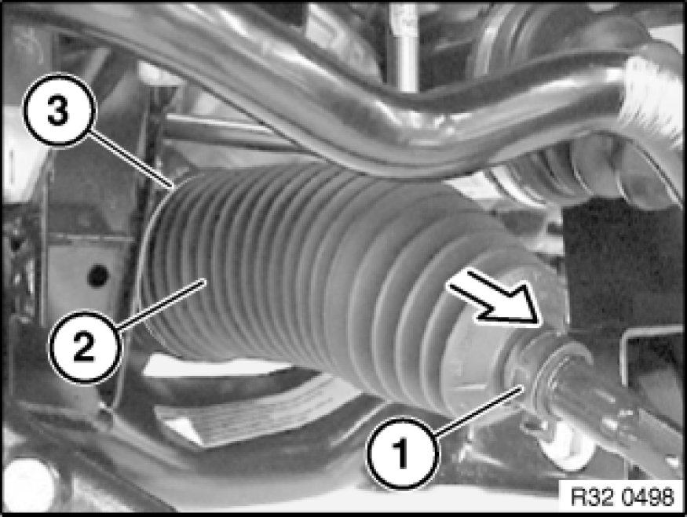

Replacing Gaiter for Steering Gear on Left or Right
32 11 100 - Replacing gaiter for steering gear on left or right

Important!
The power steering gear must be replaced if the polished surface of the rack is damaged (e.g. by corrosion).

Necessary preliminary tasks:
- Remove tie rod end Replacing Left or Right Tie Rod
- Only at 4th cylinder: Remove reinforcement plate Service and Repair
- If necessary, remove steering gear cover at side

Clean tie rod.
Release band clamp (1) and ear clip Instructions for Removing and Installing Ear Clips(3).
Detach gaiter (2) from tie rod.
Installation Note:
Clean rack and check surface for damage (e.g. by corrosion).
Grease rack (refer to BMW Service Operating Fluids).
Clean tie rod and apply grease to taper.
Note:
This ensures that the gaiter is not rotated when the tie rod is rotated.
After installation:
- Perform chassis alignment check
- Carry out steering angle sensor adjustment Adjustments